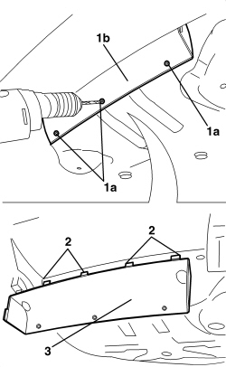

7210E71 R.R. REAR BUMPER LOWER AIR DUCT
- Path
- Procedures > 72 PANELS AND FRAMES > 7210 REMOVING-REFITTING > 7210E EXTERNAL PARTS > 7210E71 R.R. REAR BUMPER LOWER AIR DUCT
- Kind
- repair procedure (removal / refitting; the operation number is the code)
- Applies to
- all engines; all production periods
- Interactive page
- https://sloeber94.github.io/elrnDB-aBrrSpdr/en/#/946002743
Applies to: all engines; all production periods
 Removing
Removing
 Refitting
RefittingOp. 7210E69 R.R. REAR BUMPER LOWER AERODYNAMIC EDGE
1. Using a drill, remove the rivets (1a) securing the duct (1b).
2. Release the retainers for the duct using the special tool.
Tool | Description | Function | Validity |
|---|---|---|---|
1823014000 | Knife | Release the retainers |
3. Keep the duct.

Applies to: all engines; all production periods
Refitting
Removing- Check that the duct is not damaged.
- Attach the duct retainers.
- Fit the rivets.